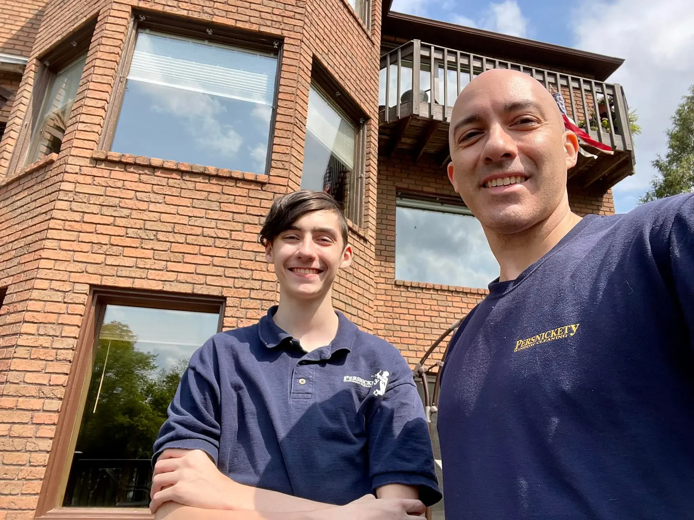

Grandpa Winter
Meticulous, organized and particular. His example—and the word “persnickety”—gave the business its name.
Persnickety is more than a company name. It is a way of working—learned young, shaped by family and carried into every home and business we serve.

I started cleaning windows in middle school when my uncle taught me the trade. I kept at it, loved the work and never really stopped.
What began as a skill became a way to serve people well: show up, communicate clearly, respect the property and take the time to do the job right. Years later, I taught my son Jacob those same skills.
The story is not about a corporate slogan. It is about standards demonstrated, learned and passed on.
Meticulous, organized and particular. His example—and the word “persnickety”—gave the business its name.
Learned window cleaning from his uncle in middle school, stayed with the work and built a local company around doing it carefully.
Learned the same window cleaning skills from John, continuing the family influence behind the Persnickety standard.
That advice from my grandfather still describes how the work is approached. Details matter because customers trust us with their homes, businesses and views.

Jacob and Jack working through a tall wall of glass on a Northeast Ohio home.
The crew applies the same standard across everyday homes, large custom properties, storefronts, offices, dealerships and difficult architectural glass. The goal is simple: leave the glass—and the experience—better than we found it.
Send John the address, service needed and a few photos when possible. You will get a direct, practical next step.